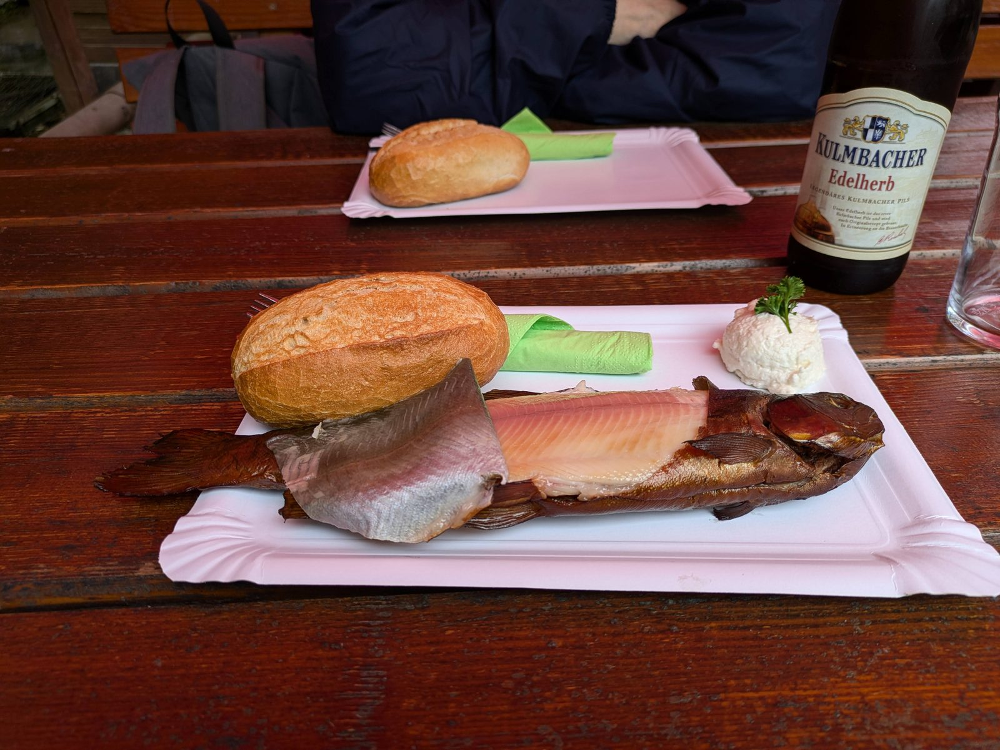

Jaka ryba do wędzenia?
Pstrąg, makrela, węgorz — dlaczego tłuszcz jest kluczem
Do wędzenia najlepiej nadają się ryby tłuste i średnio tłuste: tłuszcz rozpuszcza i zatrzymuje aromaty dymu, a podczas obróbki cieplnej chroni mięso przed wysuszeniem. Dlatego klasyczna trójka to pstrąg (delikatny, szybko gotowy, idealny na start), makrela (tania, bardzo tłusta, niemal niemożliwa do zepsucia) i węgorz (najtłustszy, uznawany za króla wędzarni — jego mięso po uwędzeniu jest maślane i aromatyczne). Dobrze wędzą się też sieja, sielawa, leszcz, karp i łosoś. Ryby chude, jak szczupak czy sandacz, wędzić można, ale łatwo je przesuszyć — wymagają krótszych czasów i większej uwagi. Ryba do wędzenia musi być świeża, wypatroszona i dokładnie oczyszczona z krwi przy kręgosłupie; łusek zwykle się nie usuwa, bo chronią skórę przed pękaniem.
Solenie
Solanka — proporcje i czasy
Solanka to podstawowa metoda przygotowania ryby do wędzenia: wyrównuje smak, częściowo konserwuje i ujędrnia mięso.
- woda — 1 litr (przegotowana i ostudzona)
- sól kamienna niejodowana — 70–80 g na każdy litr (ok. 3 czubate łyżki)
- opcjonalnie: łyżeczka cukru, liść laurowy, ziele angielskie, kilka ziaren pieprzu, ząbek czosnku
- Rozpuść sól (i ewentualne dodatki) w wodzie; solanka musi być zimna, zanim włożysz rybę.
- Zanurz ryby całkowicie w solance w naczyniu nierdzewnym, szklanym lub plastikowym spożywczym (nie aluminiowym). Możesz docisnąć talerzem.
- Czas solenia zależy od wielkości ryby: małe ryby i porcjowane filety 1,5–3 h, pstrągi porcjowe (250–400 g) 3–6 h, większe ryby 1–2 kg 6–10 h, duże sztuki i węgorze 10–12 h. Solenie prowadź w lodówce lub w chłodnym miejscu.
- Po wyjęciu krótko opłucz ryby z nadmiaru soli i przejdź do osuszania.
Solenie na sucho — wariant
Zamiast solanki ryby można natrzeć solą na sucho: ok. 1 czubata łyżka soli na kilogram ryby, dokładnie w środku i na zewnątrz, ewentualnie z dodatkiem cukru i rozkruszonych przypraw. Ryby układa się w naczyniu, przykrywa i trzyma w lodówce 2–8 godzin zależnie od wielkości, po czym płucze i osusza. Solenie na sucho daje bardziej zwięzłe, intensywniej słone mięso i jest praktyczne w terenie, gdzie trudno o duże naczynie z solanką. Wadą jest mniej równomierne zasolenie — przy grubych rybach warto naciąć skórę lub wydłużyć czas.
Osuszanie przed wędzeniem — pelikuła
To etap, który początkujący najczęściej pomijają, a od którego zależy połowa sukcesu. Po wyjęciu z solanki i opłukaniu ryby trzeba osuszyć: wytrzyj je papierowym ręcznikiem i zawieś w przewiewnym, zacienionym miejscu (lub w wędzarni przy otwartych drzwiczkach, bez dymu) na 1–2 godziny. Na powierzchni mięsa tworzy się wtedy cienka, lekko lepka, błyszcząca błona białkowa — tzw. pelikuła — do której dym przylega równomiernie, dając piękny złocisty kolor i czysty smak. Ryba mokra wędzi się plamiście, kwaśnieje od skondensowanego dymu i gotuje zamiast wędzić. Wnętrze ryby rozeprzyj patyczkami lub wykałaczkami, aby dym swobodnie krążył w jamie brzusznej.
Drewno i dym
Dobór drewna
Podstawą polskiego wędzenia ryb jest olcha — daje łagodny, klasyczny aromat i złocistobrązowy kolor. Buk wędzi nieco intensywniej i daje kolor ciemniejszy, żółtobrązowy; często miesza się go z olchą. Drewno drzew owocowych (jabłoń, wiśnia, śliwa, grusza) daje słodkawy, delikatny dym i ładną barwę — świetne jako dodatek lub samodzielnie do pstrąga. Na sam koniec wędzenia można dorzucić gałązkę jałowca (oszczędnie — łatwo przedobrzyć). Drewno powinno być sezonowane, suche i okorowane (kora dymi gorzko). Nigdy nie używaj drewna drzew iglastych — sosny, świerka, jodły: zawarta w nich żywica daje gryzący, gorzki dym i osadza na rybie ciemną, smolistą powłokę. Unikaj też drewna malowanego, impregnowanego i płyt meblowych.
Wędzenie na gorąco — trzy etapy
Przebieg procesu
Wędzenie na gorąco składa się z trzech etapów. Etap 1 — osuszanie/podsuszanie: 50–60°C przez ok. 30–40 minut, przy lekko uchylonych drzwiczkach i minimalnym dymie; ryba ma się dosuszyć i ogrzać. Etap 2 — wędzenie właściwe: 60–90 minut w gęstym, łagodnym dymie, zwykle przy temperaturze 60–75°C; ryba nabiera koloru i aromatu. Etap 3 — dopiekanie: podniesienie temperatury do 80–90°C na końcówkę procesu, aż mięso w najgrubszym miejscu osiągnie minimum 70°C — dopiero wtedy ryba jest bezpieczna i w pełni ścięta. Gotowość poznasz po tym, że płetwa grzbietowa daje się wyciągnąć lekko, a mięso odchodzi od kręgosłupa. Termometr z sondą to najlepszy zakup dla każdego wędzącego.
Pstrąg wędzony na gorąco
- pstrągi porcjowe 250–400 g, wypatroszone, z głową lub bez
- solanka 70–80 g soli / 1 l wody, czas solenia 3–6 h
- drewno: olcha, opcjonalnie z dodatkiem drewna jabłoni lub wiśni
- Pstrągi po solance opłucz, osusz i podsuszaj zawieszone 1–2 h do uzyskania pelikuły; brzuszki rozeprzyj wykałaczkami.
- Osuszanie w wędzarni: 50–60°C, ok. 30 minut, uchylone drzwiczki, minimum dymu.
- Wędzenie właściwe: 60–75°C, gęsty dym olchowy, ok. 60 minut.
- Dopiekanie: podnieś temperaturę do 80–90°C na 20–30 minut, aż wnętrze osiągnie min. 70°C, skóra się złoci, a płetwa grzbietowa wychodzi bez oporu.
- Łączny czas dla pstrąga porcjowego: ok. 2–2,5 h. Wystudź ryby zawieszone w przewiewie przed schowaniem.
Makrela wędzona na gorąco
- makrele 300–500 g, wypatroszone, najlepiej bez głów
- solanka 70–80 g soli / 1 l wody, czas solenia 2–4 h (makrela jest tłusta i chłonie sól szybko)
- drewno: olcha lub olcha z bukiem
- Makrele (jeśli mrożone — w pełni rozmrożone w lodówce) po solance opłucz i osuszaj zawieszone za ogony 1–2 h.
- Osuszanie w wędzarni: 50–60°C, 30–40 minut; makrela ma cienką skórę, więc nie podnoś temperatury gwałtownie, bo popęka.
- Wędzenie właściwe: 60–70°C, umiarkowanie gęsty dym, ok. 60–90 minut, do głębokiego złotego koloru.
- Dopiekanie: 80–85°C przez 15–25 minut, do min. 70°C w środku. Tłuszcz zacznie lekko skapywać — to znak, że ryba dochodzi.
- Łączny czas: ok. 2–2,5 h. Makrela wędzona najlepiej smakuje następnego dnia, po przegryzieniu w lodówce.
Węgorz wędzony na gorąco
- węgorze wypatroszone, dokładnie oczyszczone ze śluzu (natarcie solą lub przetarcie octem), nie ściągaj skóry
- solanka 80 g soli / 1 l wody, czas solenia 8–12 h zależnie od grubości
- drewno: olcha, klasycznie z gałązką jałowca na koniec
- Węgorze po solance opłucz i osuszaj zawieszone pionowo (za głowy lub na haczykach) 1,5–2 h — gruba, tłusta skóra potrzebuje więcej czasu na pelikułę.
- Osuszanie w wędzarni: 50–60°C, 30–40 minut, aż skóra będzie sucha w dotyku.
- Wędzenie właściwe: 60–70°C, gęsty dym, 90 minut (cienkie sztuki krócej, grube — pełne 90 minut); węgorz nabiera barwy od złotej po ciemnobrązową.
- Dopiekanie: 80–90°C przez 25–40 minut, do min. 70°C przy kręgosłupie w najgrubszym miejscu. Skóra powinna się marszczyć, a mięso lekko odchodzić.
- Łączny czas: ok. 2,5–3,5 h. Wystudź zawieszone — ciepły węgorz jest kruchy i łatwo go uszkodzić przy zdejmowaniu.
Wędzenie na zimno
Krótko o metodzie — i ważne ostrzeżenie
Wędzenie na zimno prowadzi się w temperaturze 20–30°C przez wiele godzin, a nawet kilka dni, z przerwami. Mięso nie ścina się termicznie — pozostaje surowe, jedynie zasolone, podsuszone i nasycone dymem; tak powstaje m.in. łosoś wędzony na zimno. To metoda wymagająca: potrzebny jest długi kanał dymowy lub generator dymu oddzielony od paleniska, stabilna niska temperatura i mocniejsze solenie. Ostrzeżenie: ponieważ ryba nie przechodzi obróbki termicznej, surowiec przeznaczony do wędzenia na zimno musi być wcześniej przemrożony (minimum 7 dni w temperaturze −20°C (zwykła domowa zamrażarka osiąga ok. −18°C — wtedy mroź odpowiednio dłużej), im dłużej i zimniej, tym pewniej), aby unieszkodliwić ewentualne pasożyty. Ryb wędzonych na zimno nie powinny jeść kobiety w ciąży, małe dzieci i osoby o obniżonej odporności. Początkującym zdecydowanie lepiej zacząć od wędzenia na gorąco.
Wędzarnia domowa
Budowa prostej wędzarni
Do wędzenia na gorąco nie potrzeba murowanej wędzarni. Najprostsze sprawdzone rozwiązania: wędzarnia z metalowej beczki (czysta beczka 200 l bez powłok lakierniczych, palenisko bezpośrednio na dnie lub w dołku pod beczką, pręty na ryby u góry, przykrycie z desek lub jutowego worka), wędzarnia ze starej szafki metalowej lub drewnianej (półki zastąpione prętami, dołem doprowadzony rurą lub rowem dym z oddalonego o 1–2 m paleniska — taka konstrukcja daje chłodniejszy, łagodniejszy dym) oraz gotowe wędzarnie ogrodowe — blaszane lub drewniane, z paleniskiem, termometrem i tacą na ociekający tłuszcz, dostępne od ok. 200–300 zł. Niezależnie od konstrukcji dwa elementy są obowiązkowe: termometr umieszczony na wysokości ryb (temperatura przy suficie a przy rybach potrafi różnić się o 20°C) i możliwość regulacji dopływu powietrza, którą kontrolujesz żar i gęstość dymu.
Przechowywanie ryb wędzonych
Jak długo i w czym
Ryba wędzona na gorąco to produkt nietrwały — dym konserwuje tylko powierzchownie. Po całkowitym wystudzeniu przechowuj ją w lodówce, zawiniętą w papier śniadaniowy lub pergamin (nie w szczelnej folii, w której wilgotnieje i pleśnieje), maksymalnie 3–4 dni. Na dłużej rybę zamroź: uwędzone i wystudzone sztuki zawiń pojedynczo i mroź do 2–3 miesięcy; po rozmrożeniu w lodówce odśwież 10 minut w piekarniku w 90–100°C. Nigdy nie pakuj do lodówki ryby ciepłej — skroplona para przyspiesza psucie. Ryby wędzonej nie przewoź i nie przechowuj w cieple (np. w aucie latem) — jeśli stała w temperaturze pokojowej dłużej niż 2–3 godziny, nie ryzykuj.
FAQ — najczęstsze pytania
Dlaczego moja ryba jest gorzka?
Najczęstsze przyczyny: dym z mokrego lub iglastego drewna, dym z kory, zbyt gęsty i „duszony" dym przy zbyt małym dopływie powietrza albo wędzenie ryby mokrej, bez pelikuły — skondensowane na zimnej, wilgotnej skórze składniki dymu dają kwaśno-gorzki posmak. Lekarstwo: suche, okorowane drewno liściaste, swobodny przepływ powietrza i obowiązkowe osuszenie ryby przed włożeniem do dymu.
Czy mogę wędzić ryby mrożone?
Tak — i jest to wręcz standard w przypadku makreli, która do Polski trafia głównie mrożona. Rybę rozmroź powoli w lodówce (nigdy w ciepłej wodzie), a potem traktuj jak świeżą: solanka, osuszanie, wędzenie. Mięso po mrożeniu jest odrobinę luźniejsze, więc skróć solenie o około jedną trzecią. Pamiętaj tylko, że ryby raz rozmrożonej i uwędzonej na gorąco nie należy ponownie zamrażać w nieskończoność — jedno mrożenie gotowego wyrobu wystarczy.
Po czym poznać, że ryba jest uwędzona?
Trzy sygnały: płetwa grzbietowa daje się wyjąć lekkim ruchem, mięso przy kręgosłupie jest matowe i ścięte (nie szkliste) oraz odchodzi od ości, a skóra ma jednolity złocisty lub brązowy kolor. Najpewniejszy jest jednak termometr z sondą — minimum 70°C w najgrubszym miejscu przez co najmniej minutę. Kolor sam w sobie bywa mylący: ryba może być ciemna od dymu, a w środku wciąż surowa.
Zrębki, klocki czy polana?
W małych wędzarniach ogrodowych i beczkach najwygodniejsze są zrębki i klocki wędzarnicze sypane na żar lub na tackę — łatwo dozować dym. W większych wędzarniach z prawdziwym paleniskiem klasyką są niewielkie polana i grube szczapy, które dają jednocześnie żar (temperaturę) i dym. Zrębków nie trzeba moczyć na siłę — lekko podsuszone tlą się równomierniej; mokre dają dym chłodniejszy, ale bardziej „parowy". Zasada niezmienna: tylko drewno liściaste, suche i bez kory.
Źródła i weryfikacja
Temperatury, czasy i proporcje solanki opracowano na podstawie tradycyjnych polskich receptur wędzarniczych oraz ogólnodostępnych zaleceń dotyczących obróbki ryb. Pamiętaj o bezpieczeństwie żywności: wędź wyłącznie ryby świeże i prawidłowo schłodzone; ryby przeznaczone do spożycia bez pełnej obróbki termicznej (wędzenie na zimno, marynowanie) uprzednio zamroź — minimum 7 dni w temperaturze −20°C (zwykła domowa zamrażarka osiąga ok. −18°C — wtedy mroź odpowiednio dłużej) — aby wyeliminować ryzyko pasożytów; wędzenie na gorąco prowadź tak, aby mięso w najgrubszym miejscu osiągnęło co najmniej 70°C i było ścięte w całym przekroju. Gotowych wyrobów nie przetrzymuj w cieple, a przechowuj w lodówce maksymalnie kilka dni. Legalność zabrania ryby z łowiska zawsze weryfikuj w aktualnym regulaminie PZW lub łowiska.